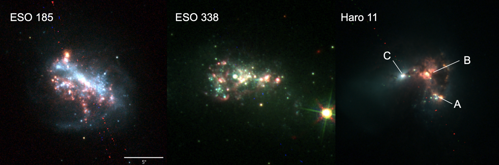
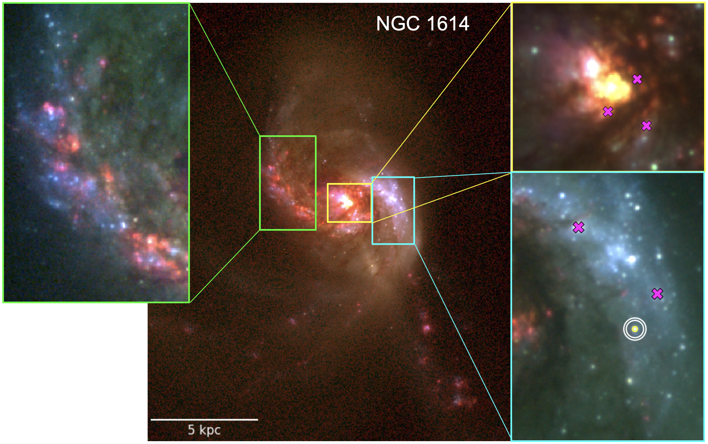
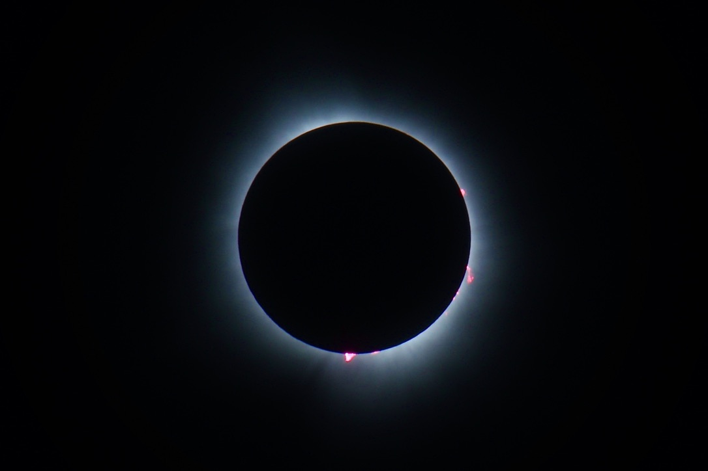
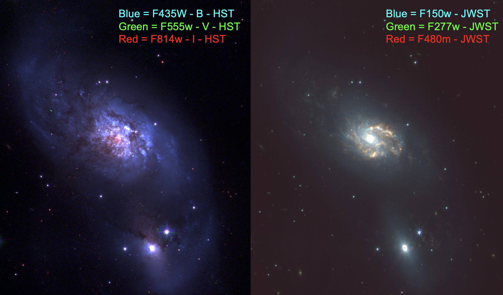

{kind=link}

A Tale of Three Dwarfs
Featured by AAS Nova, 3icolor images of HST data for 3 Blue Bompact Dwarfs as published in Chandar et al (2024).
I am a sixth-year astrophysics Ph.D. candidate working with Dr. Rupali Chandar at the University of Toledo. After growing up in Washington State (the only state where you have to specify you are talking about a state), I moved to California to study engineering. I quickly learned that I was more interested in my physics classes and switched majors in my first year. I was later given an amazing opportunity to work at NASA Ames after graduation as my first introduction to both research and astronomy, instantly causing me to fall in love with both. I have been following that love for space ever since.
I have spent a lot of time mentoring younger students and am always happy to talk with anyone interested in astrophysics. Outside of research I enjoy riding horses (in many disciplines but mainly Reining and Dressage), reading books, getting together with friends to play games (virtually and irl), discovering new music, and traveling. I am also a dual-citizen of the US and Italy, but my Italian is sadly very lacking.

My research focuses on using space telescopes (JWST and HST) to find and characterize star clusters in nearby merging galaxy systems to understand how extreme environments may affect the formation and destruction of star clusters. These systems are analogs to earlier universe galaxies, when mergers were far more common, so we are able to use relationships that we determine in these resolved systems to better constrain characteristics of earlier universe galaxies. For example, these mergers can create young, very massive clusters with masses on par with those of ancient globular clusters, which could help us understand how globs formed in the early universe. Figure is from Caputo et al. (2024).
Examples of figures I made for publications, pretty pictures that we didn't have room for, and photos I have taken along my astronomy journey.

Featured by AAS Nova, 3icolor images of HST data for 3 Blue Bompact Dwarfs as published in Chandar et al (2024).
Red, green, and blue 3-color images with B-V−I+Hα HST for the 17 galaxies in the PHANGS HST Hα sample as seen in Chandar et al (2025).

Image I took of the April 8th, 2024 solar eclipse near Toledo, OH. Some prominences are displayed arching out of the sun and emitting strongly in Hα, which gives it the beautiful pink color.

A look at how the Luminous InfraRed Galaxy (LIRG) IC 4687 changes when observed in visible (left, HST) and near-IR (right, JWST) wavelengths.
3-color figure of NGC 1614 with HST B, V, and Hα filters as published in Caputo et al. (2024).
{kind=link}
{kind=link}
{kind=link}
{kind=link}